參數方程式與極座標
📌 本章核心問題
如何用參數方程式描述曲線？為什麼極座標在處理圓形、螺旋等徑向圖形時比直角座標更方便？圓錐曲線（拋物線、橢圓、雙曲線）如何用代數統一定義？
🔑 關鍵概念
- 參數方程式（parametric equations）：用獨立參數 $t$ 同時定義 $x(t)$ 和 $y(t)$，可以描述非函數曲線（如圓、擺線）。
- 消去參數（eliminating the parameter）：將參數式轉為 $y = f(x)$ 或 $F(x,y) = 0$ 的形式。
- 參數曲線的導數：$\frac{dy}{dx} = \frac{dy/dt}{dx/dt}$，前提是 $dx/dt \neq 0$。
- 極座標（polar coordinates）：點以 $(r, \theta)$ 表示，$r$ 為徑向距離，$\theta$ 為極角。
- 直角–極座標互換：$x = r\cos\theta$, $y = r\sin\theta$; $r^2 = x^2 + y^2$, $\tan\theta = y/x$。
- 極座標面積：$A = \frac{1}{2}\int_{\alpha}^{\beta} r^2\,d\theta$，使用扇形而非矩形近似。
- 極座標弧長：$L = \int_{\alpha}^{\beta} \sqrt{r^2 + (dr/d\theta)^2}\,d\theta$。
- 擺線（cycloid）：圓在直線上滾動時，邊緣一點的軌跡，參數式 $x = a(t - \sin t)$, $y = a(1 - \cos t)$。
- 圓錐曲線（conic sections）：平面與圓錐相交所得；用離心率 $e$ 統一區分：$e=1$ 拋物線，$e<1$ 橢圓，$e>1$ 雙曲線。
- 圓錐曲線的極座標方程：$r = \frac{ep}{1 \pm e\cos\theta}$ 或 $r = \frac{ep}{1 \pm e\sin\theta}$。
🧠 邏輯鏈
參數方程式 → 消去參數 → 參數曲線的微積分（導數、面積、弧長）→ 引入極座標（當曲線有徑向對稱時更自然）→ 極座標中的面積與弧長 → 圓錐曲線的統一理論（幾何定義 → 標準式 → 極座標式 → 判別式）
📚 先備知識
- 微分：連鎖律、隱微分、參數式求導
- 積分：定積分、三角函數積分、弧長公式
- 三角學：正弦/餘弦、畢氏恆等式、和角公式
- 解析幾何：二次曲線、配方法
7.1 參數方程式
在二維座標系中，參數方程式（parametric equations）是描述曲線的有力工具
常見的物理類比是：$t$ 代表時間，$(x(t), y(t))$ 描述質點在平面上的位置。例如地球繞太陽的軌道是橢圓形的——你可以把一年中的第幾天當作參數 $t$，隨著 $t$ 從 1 到 365，$(x(t), y(t))$ 畫出整個橢圓軌道。
若 $x$ 和 $y$ 是 $t$ 在區間 $I$ 上的連續函數：
則稱 $(x(t), y(t))$ 為參數方程式，$t$ 為參數。所有點 $(x(t), y(t))$ 的集合稱為參數曲線，記作 $C$。
參數曲線的繪圖
繪製參數曲線的基本方法是建立 $t$、$x$、$y$ 三欄的數值表，選取足夠多的 $t$ 值，計算對應的 $(x, y)$，然後在平面上描點連線。箭頭標示定向（orientation）——即隨著 $t$ 增加，點在曲線上的移動方向。
以 $x = 2t$、$y = t^2 - 3$（$-3 \le t \le 2$）為例：當 $t = -3$ 時得到 $(-6, 6)$，$t = 2$ 時得到 $(4, 1)$，路徑是一段拋物線。另一個重要例子是 $x = 4\cos t$、$y = 4\sin t$（$0 \le t \le 2\pi$），這是以原點為中心、半徑 4 的圓，定向為逆時針。
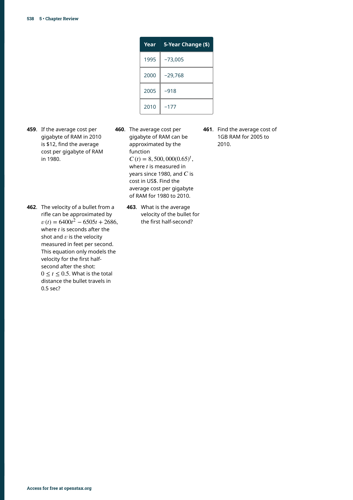
並非所有曲線都是函數圖形——圓 $x^2 + y^2 = 16$ 無法寫成 $y = f(x)$（不通過鉛直線檢驗），但可以用參數式 $x = 4\cos t$, $y = 4\sin t$ 完美描述。這是參數方程式的關鍵優勢。
參數曲線不只是點的集合——它還有方向。兩個不同的參數化可能畫出相同的點集，但移動方向不同。畫圖時一定要加箭頭標示 $t$ 增加的方向。
消去參數
要更好地理解參數曲線，常用的技巧是消去參數（eliminating the parameter）——從兩個等式中解出 $t$，代入得到純 $x$ 和 $y$ 的關係式。例如對於 $x = 2t$、$y = t^2 - 3$，由 $x = 2t$ 得 $t = x/2$，代入 $y$：$y = (x/2)^2 - 3 = x^2/4 - 3$——這是一條開口向上的拋物線。
但有時需要一些創意。對於 $x = 4\cos t$、$y = 3\sin t$，你不能直接解出 $t$（因為正弦和餘弦不是一對一的）。技巧是利用畢氏恆等式 $\cos^2 t + \sin^2 t = 1$：
這是一個水平橢圓，長半軸 4、短半軸 3，中心在原點。
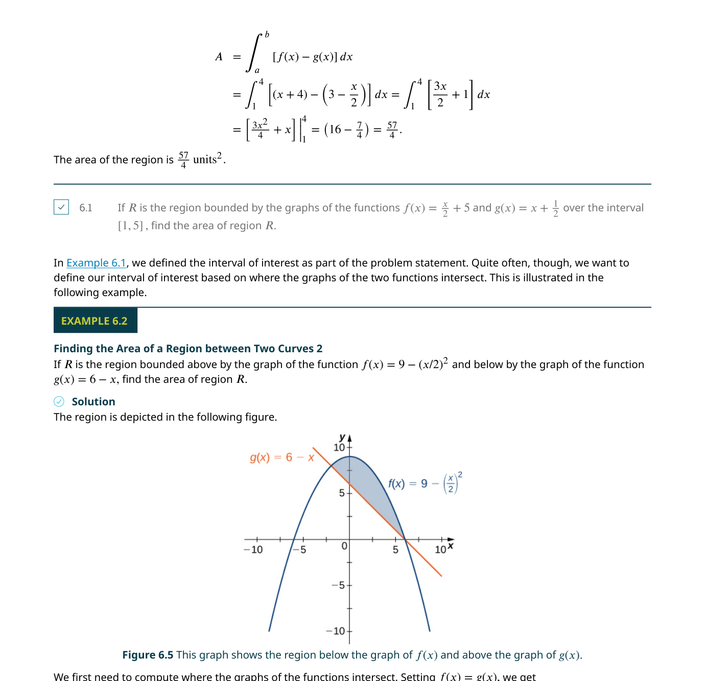
📝 範例
📝 範例 7.2：消去參數消去以下參數方程式中的參數並描述所得圖形：
(a) $x = \sqrt{t+1}$，$y = t^2$，$t \ge -1$
解：由 $x = \sqrt{t+1}$ 得 $t = x^2 - 1$（注意 $x \ge 0$）。代入：$y = (x^2 - 1)^2$，定義域為 $x \ge 0$——這是開口向上的四次曲線的右半支。
(b) $x = 4\cos t$，$y = 3\sin t$，$0 \le t \le 2\pi$
解：利用 $\cos^2 t + \sin^2 t = 1$ 得 $\frac{x^2}{16} + \frac{y^2}{9} = 1$——水平橢圓。
曲線的參數化
上述過程的反向操作——從 $y = f(x)$ 出發，找出一組參數方程式——稱為曲線的參數化（parameterization of a curve）。對同一條曲線，存在無窮多種參數化方式。最簡單的是令 $x = t$，則 $y = f(t)$。也可以選 $x = t^3$、$x = \sin t$ 等——只要 $x(t)$ 的取值範圍覆蓋原函數的定義域即可。
當你選擇 $x = t^2$（取值 $x \ge 0$）來參數化定義域包含負數的原曲線時，會丟失一半的圖形。選擇參數化時，務必確認 $x(t)$ 的值域覆蓋原曲線的整個定義域。
擺線與其他參數曲線
擺線（cycloid）是本章最具代表性的參數曲線之一。想像一個半徑為 $a$ 的圓在直線上無滑動地滾動——圓周上一點的軌跡就是擺線。其參數方程式為：
擺線的推導思路如下：輪心沿 $x$ 軸以恆定高度 $a$ 移動，位置為 $(at, a)$。螞蟻（輪緣上的點）相對於輪心做順時針圓周運動：$(-a\sin t, -a\cos t)$。將兩者相加即得擺線方程式。負號來自順時針旋轉（與標準參數化的逆時針相反）。
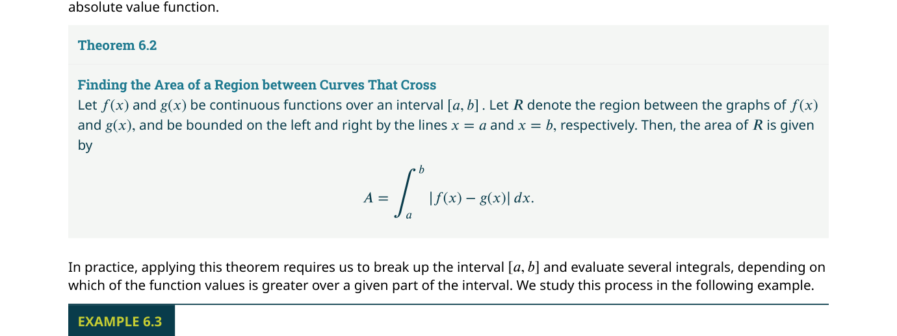
若小圓在大圓內部滾動，輪緣上的點畫出的曲線稱為內擺線（hypocycloid）。其一般參數式為：
其中 $a$ 是大圓半徑，$b$ 是小圓半徑。比值 $a/b$ 決定尖端（cusp）的數量：若比值為有理數，曲線最終閉合；若為無理數，曲線永遠不閉合——這是空間填充曲線（space-filling curve）的例子。
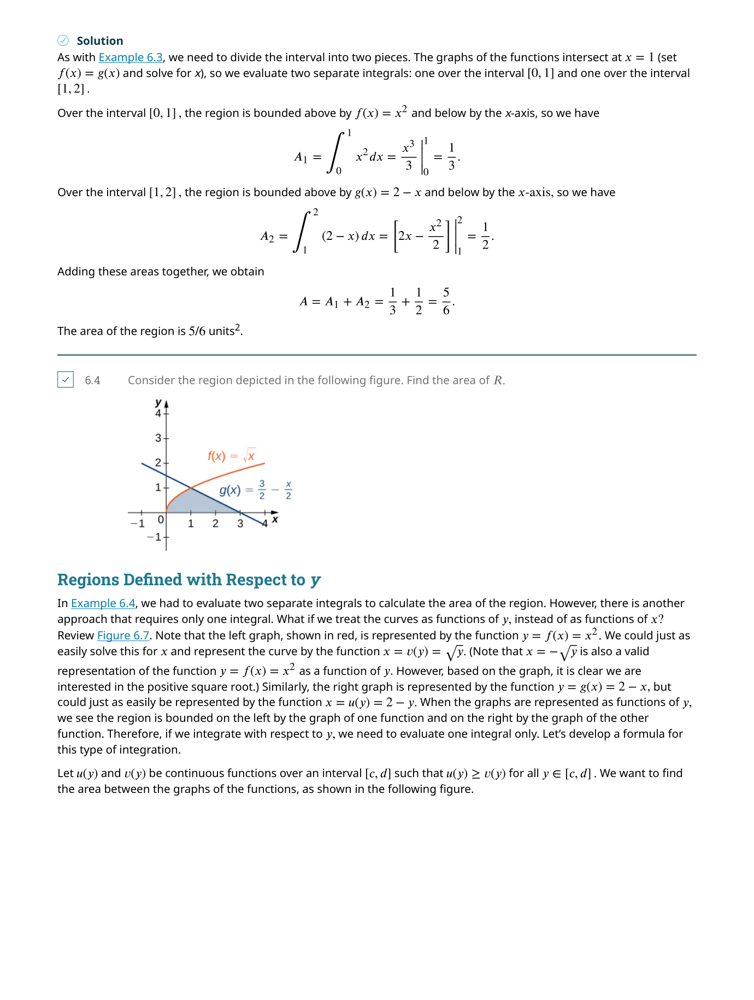
「Agnesi 的女巫」（Witch of Agnesi）是一個著名的參數曲線，由 18 世紀義大利女數學家 Maria Gaetana Agnesi 研究。名稱來自翻譯錯誤——拉丁文「versoria」（繩索）被誤譯為「versiera」（女妖），英文譯者又將其譯為「witch」。曲線的參數式為 $x = 2a\cot\theta$, $y = 2a\sin^2\theta$，在機率論中對應 Cauchy 分布的機率密度函數。
📝 範例
📝 範例 7.1c：參數圓繪製 $x = 4\cos t$, $y = 4\sin t$（$0 \le t \le 2\pi$）的曲線。
解：建表（$t = 0, \pi/2, \pi, 3\pi/2, 2\pi$），得到點 $(4,0)$, $(0,4)$, $(-4,0)$, $(0,-4)$, $(4,0)$。這是半徑 4 的圓，逆時針定向。消去參數：$x^2 + y^2 = 16\cos^2 t + 16\sin^2 t = 16$。
🎮 互動模型：參數曲線與極座標繪圖
切換參數方程或極座標模式，拖動 t 或點擊繪製觀察曲線生成。
7.2 參數曲線的微積分
有了參數曲線的表示法，接下來自然的問題是
參數曲線的導數
考慮參數曲線 $x = x(t)$、$y = y(t)$。若在某一點 $dx/dt \neq 0$，則切線的斜率為：
這條公式可以用連鎖律證明：假設可以消去參數得到 $y = F(x)$，則 $y(t) = F(x(t))$，兩邊對 $t$ 微分：$\frac{dy}{dt} = F'(x(t))\frac{dx}{dt} = \frac{dy}{dx}\frac{dx}{dt}$。只要 $dx/dt \neq 0$，即可解出 $\frac{dy}{dx}$。
例如對於 $x = t^2 - 3$、$y = 2t + 1$：$\frac{dx}{dt} = 2t$，$\frac{dy}{dt} = 2$，所以 $\frac{dy}{dx} = \frac{2}{2t} = \frac{1}{t}$。當 $t = 2$ 時，斜率為 $1/2$。
這條公式的另一個重要用途是找臨界點（critical points）：$\frac{dy}{dx} = 0$（水平切線）發生在 $dy/dt = 0$ 且 $dx/dt \neq 0$ 時；$\frac{dy}{dx}$ 不存在（鉛直切線）發生在 $dx/dt = 0$ 時（前提是曲線在該點有定義）。

$dy/dt = 0$ 只是 $\frac{dy}{dx} = 0$ 的必要條件，前提是 $dx/dt \neq 0$。如果 $dx/dt$ 也同時為零，則需要使用其他方法判斷（例如檢查極限或使用二階導數）。典型例子：$x = t^3$, $y = t^2$ 在 $t = 0$ 處兩者皆為零，曲線在該點有一個尖端（cusp）。
二階導數
參數曲線的二階導數是一階導數的導數：
📝 範例
📝 範例 7.6：求二階導數對 $x = t^2 - 3$、$y = 2t + 1$ 求 $\frac{d^2y}{dx^2}$。
解：已知 $\frac{dy}{dx} = 1/t$。則 $\frac{d}{dt}(1/t) = -1/t^2$，且 $dx/dt = 2t$。因此 $\frac{d^2y}{dx^2} = \frac{-1/t^2}{2t} = -\frac{1}{2t^3}$。
參數曲線下的面積
若曲線是非自交的（non-self-intersecting），且 $x(t)$ 在 $[\alpha, \beta]$ 上是遞增（或遞減）的可微函數，則曲線下的面積為：
以擺線的一個拱形為例：$x = a(t - \sin t)$、$y = a(1 - \cos t)$，從 $t = 0$ 到 $2\pi$。$x'(t) = a(1 - \cos t)$，因此：
結果是生成圓面積（$\pi a^2$）的三倍——這是擺線的經典性質。
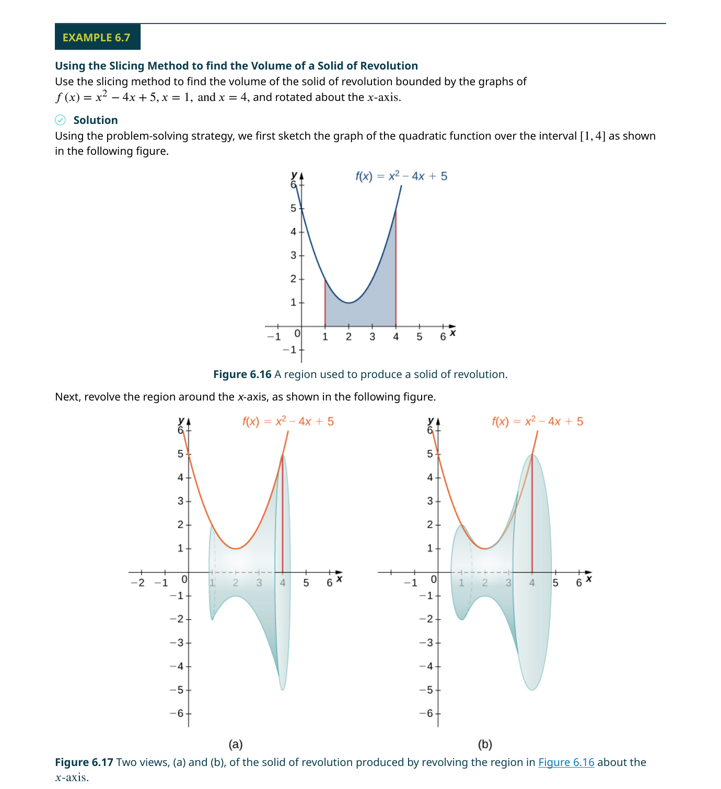
參數曲線的弧長
將曲線用折線近似，取極限得到弧長公式：
以半圓 $x = 3\cos t$、$y = 3\sin t$（$0 \le t \le \pi$）為例：$dx/dt = -3\sin t$，$dy/dt = 3\cos t$，弧長為：
結果與幾何公式 $\pi r = 3\pi$ 一致——微積分成功推導出已知的幾何公式。
參數曲線旋轉體的表面積
將參數曲線繞 $x$ 軸旋轉，其表面積為：
📝 範例
📝 範例 7.9：球的表面積用參數式推導半徑 $r$ 的球表面積。
解：上半圓 $x = r\cos t$, $y = r\sin t$（$0 \le t \le \pi$）繞 $x$ 軸旋轉：$dx/dt = -r\sin t$, $dy/dt = r\cos t$，$\sqrt{(dx/dt)^2 + (dy/dt)^2} = r$。因此 $S = \int_{0}^{\pi} 2\pi(r\sin t)(r)\,dt = 2\pi r^2\int_{0}^{\pi}\sin t\,dt = 4\pi r^2$——正是球表面積公式。
假設投手以參數式 $x = 140t$、$y = -16t^2 + 6t$（忽視空氣阻力）投球。用弧長公式可以計算球在任意時刻飛行的距離。弧長函數 $s(t) = \int_0^t \sqrt{(140)^2 + (-32v + 6)^2}\,dv$，微分即得瞬時速率。$t = 1/3$ 秒時速率約為 140 ft/s ≈ 95 mph——大聯盟快速球的速度。
7.3 極座標
直角座標系（笛卡兒平面）用 $(x, y)$ 定位點
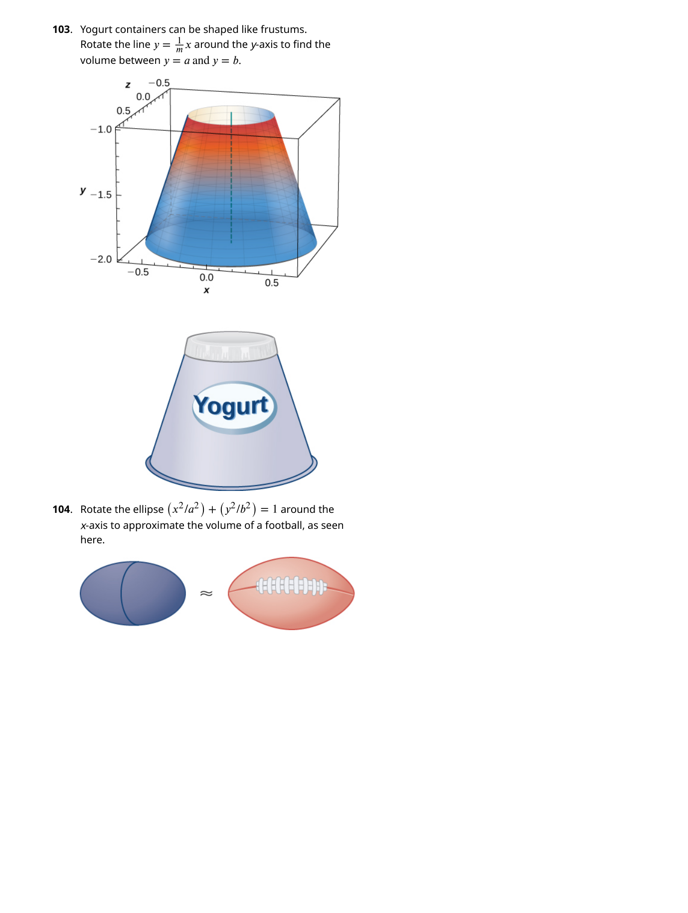
座標轉換公式
極 → 直角：
直角 → 極：
使用 $\tan\theta = y/x$ 求 $\theta$ 時，計算機給出的 $\arctan(y/x)$ 總在 $(-\pi/2, \pi/2)$ 之間。例如點 $(-1, 1)$：$\arctan(-1) = -\pi/4$，但正確的 $\theta$ 是 $3\pi/4$（第二象限）。務必根據 $x$ 和 $y$ 的正負號手動調整象限。
極座標中的繪圖
要繪製極曲線 $r = f(\theta)$，步驟與直角座標類似：建立 $\theta$ 和 $r$ 的數值表，在極座標平面上標出各點，然後連線。對於週期函數，只需計算一個週期內的點，然後利用對稱性補全圖形。
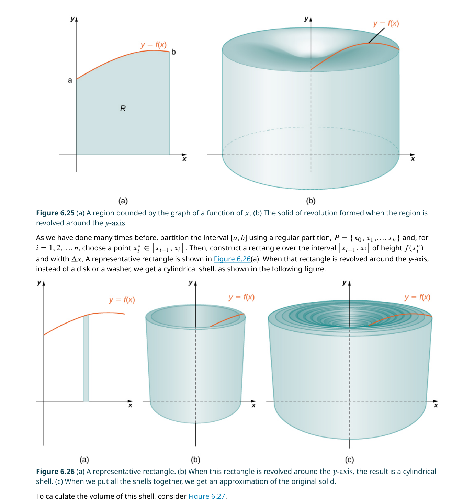
重要例子：$r = 4\sin\theta$。建表（$\theta = 0, \pi/6, \pi/3, \pi/2, 2\pi/3, 5\pi/6, \pi$），描點後會發現這是一個圓。轉換為直角座標：兩邊乘 $r$ 得 $r^2 = 4r\sin\theta$，即 $x^2 + y^2 = 4y$，配方得 $x^2 + (y-2)^2 = 4$——中心在 $(0, 2)$、半徑 2 的圓。
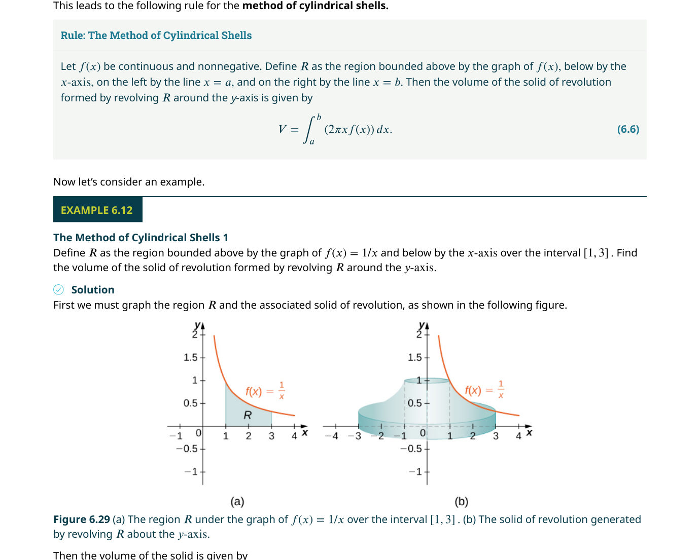
常見極曲線
| 名稱 | 方程式 | 特徵 |
|---|---|---|
| 圓 | $r = a$ | 中心在原點、半徑 $a$ |
| 圓 | $r = 2a\cos\theta$ | 中心在 $(a,0)$、半徑 $a$ |
| 圓 | $r = 2a\sin\theta$ | 中心在 $(0,a)$、半徑 $a$ |
| 心形線（cardioid） | $r = a(1 \pm \cos\theta)$ 或 $r = a(1 \pm \sin\theta)$ | 心形，$a=b$ 的 limaçon 特例 |
| 蝸牛線（limaçon） | $r = a \pm b\cos\theta$ 或 $r = a \pm b\sin\theta$ | $a/b$ 決定形狀（內環/凹口/凸形） |
| 玫瑰線（rose） | $r = a\cos(n\theta)$ 或 $r = a\sin(n\theta)$ | $n$ 為奇數→$n$ 瓣；$n$ 為偶數→$2n$ 瓣 |
| 阿基米德螺旋 | $r = a\theta$ | 等距螺旋 |
| 對數螺旋 | $r = ae^{b\theta}$ | 鸚鵡螺殼的形狀 |
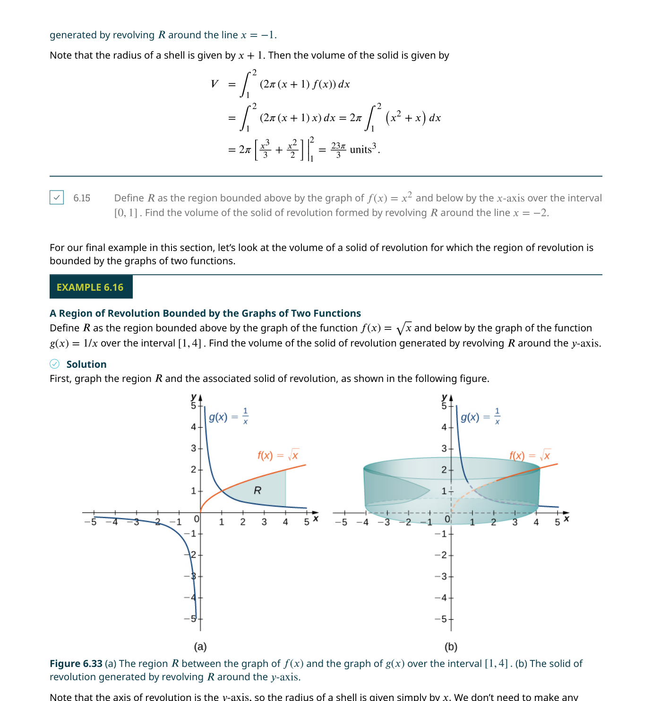
章首的鸚鵡螺外殼可以用極座標中的對數螺旋 $r = ae^{b\theta}$ 精確描述。在直角座標中，螺旋的描述非常複雜（涉及 $\sqrt{x^2+y^2} = k\arctan(y/x)$），但在極座標中只是一條簡單的指數函數——這就是選擇正確座標系的威力。
極座標中的對稱性
| 對稱類型 | 條件 |
|---|---|
| 關於極軸（$x$ 軸）對稱 | 方程式在 $\theta \to -\theta$（或 $(r,\theta) \to (r,-\theta)$）下不變 |
| 關於極點（原點）對稱 | 方程式在 $r \to -r$（或 $\theta \to \theta+\pi$）下不變 |
| 關於 $\theta = \pi/2$（$y$ 軸）對稱 | 方程式在 $\theta \to \pi-\theta$（或 $(r,\theta) \to (r,\pi-\theta)$）下不變 |
對稱性可以大幅簡化繪圖工作——只需繪製一部分，然後利用對稱性補全。例如 $r = 3\sin(2\theta)$ 在以上三種對稱檢驗都通過，因此只需繪製 $0 \le \theta \le \pi/2$ 的部分（一個花瓣），其餘三個象限用對稱得出。
📝 範例
📝 範例 7.14：用極座標描述螺旋用數學描述阿基米德螺旋。
解：假設點 $P$ 到原點的距離 $d$ 與 $\theta$ 成正比：$d = k\theta$。在直角座標中：$\sqrt{x^2+y^2} = k\arctan(y/x)$——無法直接解出 $x$ 或 $y$。但在極座標中：$r = k\theta$——簡單明瞭。這就是阿基米德螺旋。更一般的形式為 $r = a + b\theta$。
7.4 極座標中的面積與弧長
在直角座標中，定積分 $\int_a^b f(x)\,dx$ 計算曲線下面積
極座標中的面積
回憶：半徑 $r$、圓心角 $\theta$（弧度）的扇形面積為 $\frac{1}{2}r^2\theta$。將區間 $[\alpha, \beta]$ 分割為 $n$ 個子區間，每個子區間對應一個以 $r(\theta_i^*)$ 為半徑的小扇形，面積約為 $\frac{1}{2}[r(\theta_i^*)]^2\Delta\theta$。取黎曼和的極限得到：
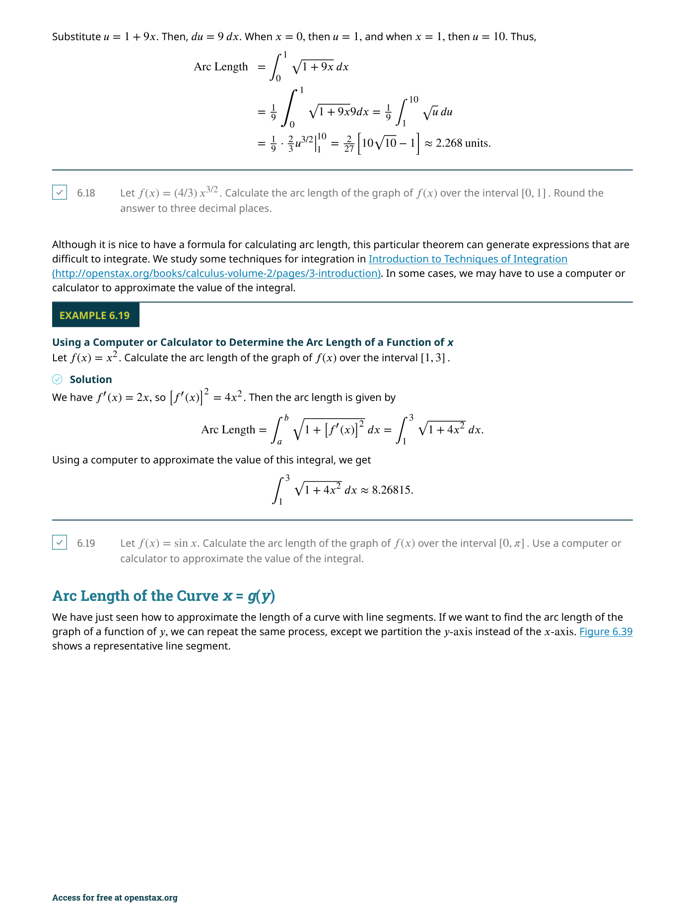
範例：求玫瑰線 $r = 3\sin(2\theta)$ 一個花瓣的面積。花瓣對應 $r = 0$ 的兩個連續 $\theta$ 值。解 $3\sin(2\theta) = 0$ 得 $2\theta = 0, \pi$，即 $\theta = 0, \pi/2$。因此：
求極曲線的「一個花瓣」或「內環」面積時，關鍵是找到 $r = 0$ 的 $\theta$ 值作為積分界限。對於 $r = a\sin(n\theta)$，解 $a\sin(n\theta) = 0$ 得 $n\theta = 0, \pi, 2\pi, \dots$。確認你所選的 $\theta$ 區間確實對應一個完整的花瓣，而不只是半個。
兩條極曲線之間的面積
與直角座標類似，兩條極曲線 $r = f(\theta)$ 和 $r = g(\theta)$ 之間的面積為外曲線面積減去內曲線面積：
其中 $f(\theta) \ge g(\theta) \ge 0$ 在 $[\alpha, \beta]$ 上。交點由 $f(\theta) = g(\theta)$ 解出。
兩條極曲線可能在原點相交，但對應的 $\theta$ 值不同。例如心形線 $r = 1 + \cos\theta$ 在 $\theta = \pi$ 時過原點，而圓 $r = 3\cos\theta$ 在 $\theta = \pi/2$ 時過原點。解 $1 + \cos\theta = 3\cos\theta$ 只得到 $\theta = \pm\pi/3$ 兩個交點，但圖形上還有原點這個第三交點。務必檢查原點是否在兩條曲線上。

極曲線的弧長
將極曲線寫成參數式：$x = r(\theta)\cos\theta$、$y = r(\theta)\sin\theta$，代入參數弧長公式並化簡：
範例：心形線 $r = 1 + \cos\theta$ 的全長。$\frac{dr}{d\theta} = -\sin\theta$，所以：
📝 範例
📝 範例 7.18：心形線弧長求心形線 $r = 1 + \cos\theta$ 的總弧長。
解：如上推導，$r^2 + (r')^2 = 4\cos^2(\theta/2)$。注意 $\cos(\theta/2)$ 在 $[\pi, 2\pi]$ 上為負，需取絕對值。利用對稱性：$\int_0^{2\pi} 2|\cos(\theta/2)|\,d\theta = 2\int_0^\pi 2\cos(\theta/2)\,d\theta = 8$。
7.5 圓錐曲線
圓錐曲線（conic sections）是古希臘數學家深入研究的主題
圓錐曲線得名於它們的生成方式：用一個平面以不同角度與圓錐相交。(1) 平面與圓錐的母線平行 → 拋物線；(2) 平面垂直於旋轉軸 → 圓；(3) 平面以其他角度與一個錐面相交 → 橢圓；(4) 平面與兩個錐面都相交 → 雙曲線。
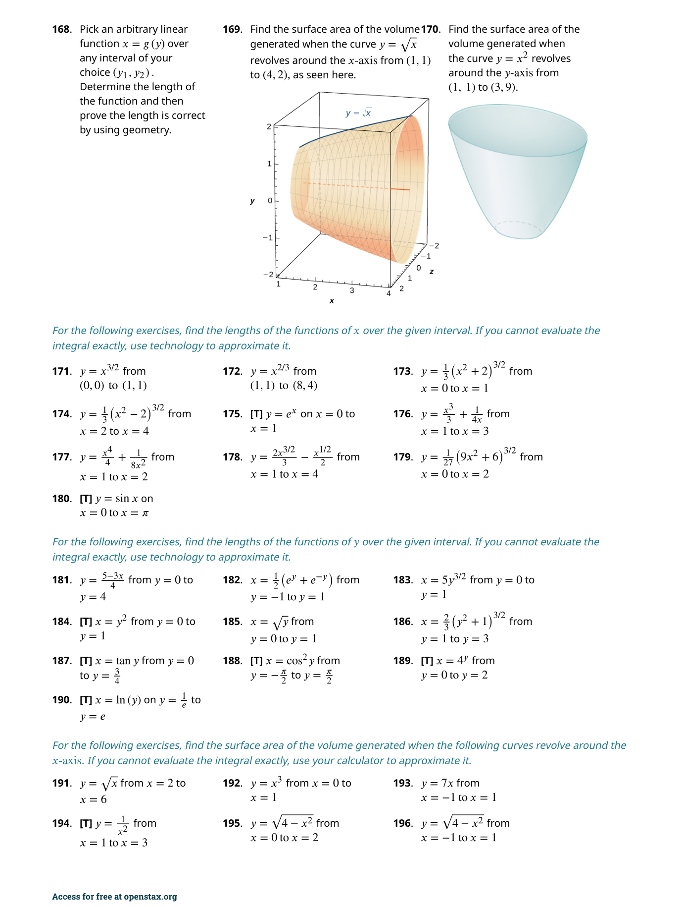
拋物線（Parabola）
定義：拋物線是到一個定點（焦點 focus）和一條定直線（準線 directrix）等距的所有點的集合。焦點到準線的一半處稱為頂點（vertex）。
頂點 $(h, k)$、焦點 $(h, k+p)$、準線 $y = k-p$ 的開口向上拋物線：
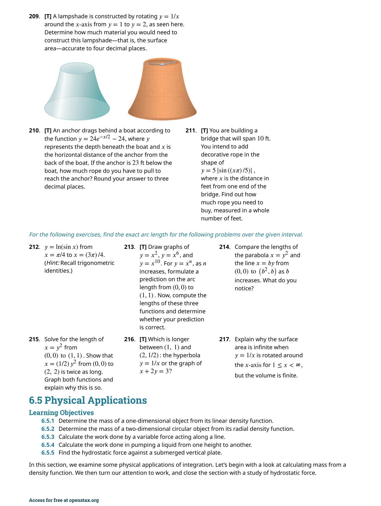
拋物線有一個重要的反射性質：平行於對稱軸入射的光線（或無線電波）會被拋物面反射並匯聚到焦點。這就是衛星天線（接收）和汽車頭燈（發射）的工作原理。
橢圓（Ellipse）
定義：橢圓是到兩個定點（焦點 foci）的距離之和為常數的所有點的集合。
中心 $(h, k)$、水平長軸 $2a$、垂直短軸 $2b$ 的橢圓：
其中 $c^2 = a^2 - b^2$，焦點在 $(h \pm c, k)$，離心率 $e = c/a$。
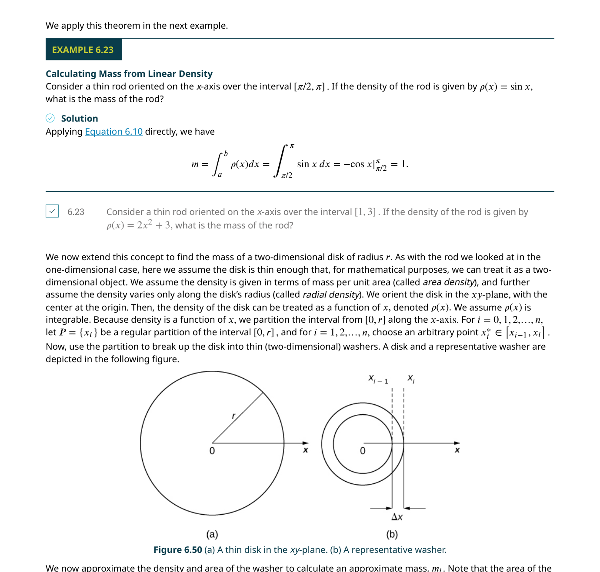
根據克卜勒第一定律，行星繞太陽的軌道是橢圓，太陽位於其中一個焦點。橢圓也有反射性質：從一個焦點發出的光線經橢圓面反射後會通過另一個焦點——這就是美國國會大廈雕像大廳（Statuary Hall）的「耳語廊」效應的數學原理。
雙曲線（Hyperbola）
定義：雙曲線是到兩個定點（焦點）的距離之差的絕對值為常數的所有點的集合。
中心 $(h, k)$、水平貫軸的雙曲線：
其中 $c^2 = a^2 + b^2$，焦點在 $(h \pm c, k)$，漸近線為 $y - k = \pm\frac{b}{a}(x - h)$。
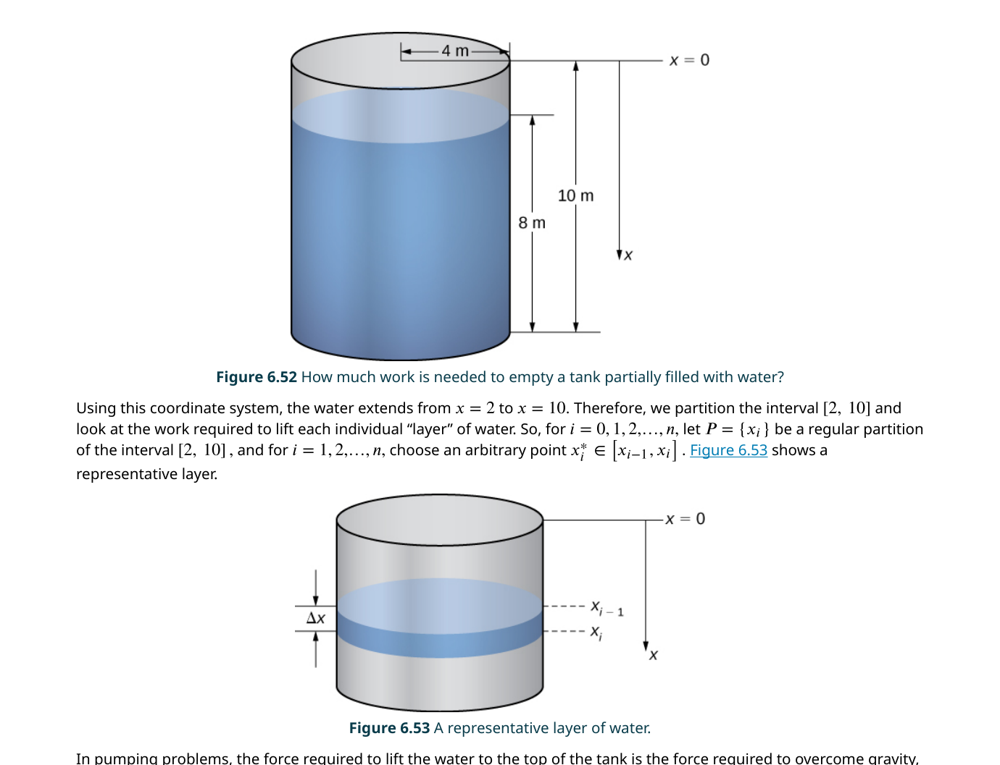
雙曲線的反射性質（指向一個焦點的光線經雙曲面反射後指向另一個焦點）用於望遠鏡設計和無線電測向。進入太陽系的彗星若速度足夠大以逃脫太陽引力，其軌跡即為雙曲線。
離心率與圓錐曲線的統一
離心率（eccentricity） $e$ 提供了一個統一描述所有圓錐曲線的方式：
| $e$ 值 | 圓錐曲線類型 |
|---|---|
| $e = 0$ | 圓 |
| $0 < e < 1$ | 橢圓 |
| $e = 1$ | 拋物線 |
| $e > 1$ | 雙曲線 |
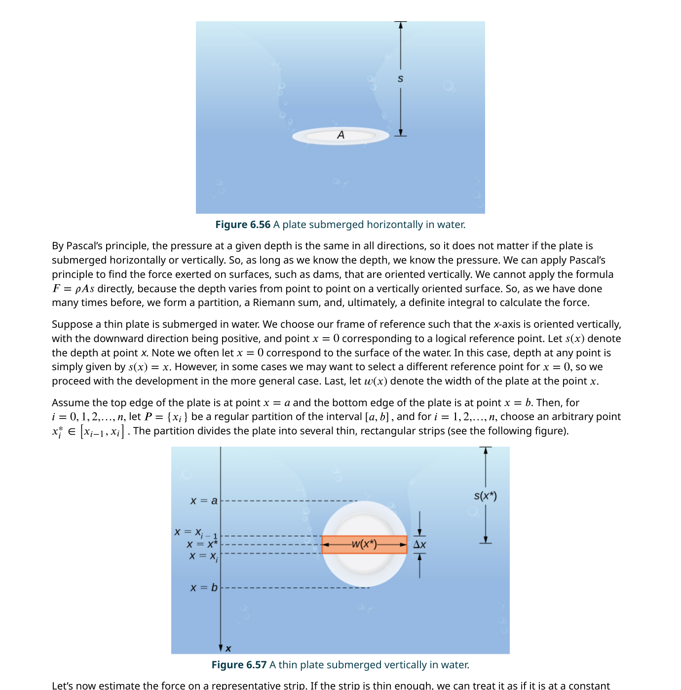
圓錐曲線的極座標方程
當圓錐曲線的一個焦點位於極點（原點）時，其極座標方程為：
其中 $p$ 為焦參數（focal parameter）——焦點到最近準線的距離。餘弦對應水平軸，正弦對應垂直軸。
📝 範例
📝 範例 7.23：以極座標式識別圓錐曲線識別 $r = \frac{3}{1 + 2\cos\theta}$。
解：分母常數項已是 1，因此 $e = 2$（$> 1$）——這是雙曲線。焦參數由 $ep = 3$ 得 $p = 1.5$。分母含 $\cos\theta$，故為水平雙曲線。
一般二次方程與旋轉圓錐曲線
一般二次方程 $Ax^2 + Bxy + Cy^2 + Dx + Ey + F = 0$ 的圖形是圓錐曲線。判別式 $B^2 - 4AC$ 決定類型：
- $B^2 - 4AC < 0$：橢圓（含圓）
- $B^2 - 4AC = 0$：拋物線
- $B^2 - 4AC > 0$：雙曲線
當 $B \neq 0$ 時，座標軸被旋轉。旋轉角 $\theta$ 滿足 $\cot(2\theta) = \frac{A-C}{B}$。
橢圓：$c^2 = a^2 - b^2$（$a$ 最大）；雙曲線：$c^2 = a^2 + b^2$。許多人死記硬背 $c^2 = a^2 - b^2$，但這只適用於橢圓。記憶技巧：橢圓的焦點在內部（$c < a$），雙曲線的焦點在外部（$c > a$）。
📋 關鍵概念回顧（Key Concepts）
- 參數方程式（Parametric Equations）：用第三變數 $t$（參數）定義 $x = f(t),\; y = g(t)$。同一條曲線可以有多種參數化方式。
- 消去參數：從 $x=f(t)$ 解出 $t$ 代入 $y=g(t)$，或利用三角恆等式（如 $\cos^2 t + \sin^2 t = 1$）消去 $t$ 得到 $y$ 與 $x$ 的直接關係。
- 擺線（Cycloid）：圓在直線上滾動時，圓周上一點的軌跡。參數方程：$x = a(t-\sin t),\; y = a(1-\cos t)$。
- 參數曲線的切線斜率：$\frac{dy}{dx} = \frac{dy/dt}{dx/dt}$（當 $dx/dt \neq 0$）。二階導數：$\frac{d^2y}{dx^2} = \frac{d}{dt}\!\left(\frac{dy}{dx} ight) \Big/ \frac{dx}{dt}$。
- 參數曲線的弧長：$L = \int_a^b \sqrt{\left(\frac{dx}{dt} ight)^2 + \left(\frac{dy}{dt} ight)^2}\,dt$。若曲線以 $y=f(x)$ 表示，退化為標準弧長公式。
- 極座標（Polar Coordinates）：以 $(r, \theta)$ 表示點，$r$ 為到原點的距離，$\theta$ 為與正 $x$ 軸的夾角。與直角座標的轉換：$x = r\cos\theta,\; y = r\sin\theta$。
- 極座標曲線的面積：$A = \int_\alpha^\beta \frac{1}{2}r^2\,d\theta = \frac{1}{2}\int_\alpha^\beta [f(\theta)]^2\,d\theta$。這是極座標中最核心的積分公式。
- 極座標曲線的弧長：$L = \int_\alpha^\beta \sqrt{r^2 + \left(\frac{dr}{d\theta} ight)^2}\,d\theta$。
- 圓錐曲線（Conic Sections）：以離心率 $e$ 分類——$e=0$ 圓、$0
- 旋轉體表面積（參數形式）：$S = \int_a^b 2\pi y \sqrt{\left(\frac{dx}{dt} ight)^2 + \left(\frac{dy}{dt} ight)^2}\,dt$（繞 $x$ 軸旋轉）。
📐 關鍵公式（Key Equations）
| 公式 | 說明 |
|---|---|
| $$\frac{dy}{dx} = \frac{dy/dt}{dx/dt},\quad \frac{dx}{dt} \neq 0$$ | 參數曲線的一階導數（切線斜率） |
| $$\frac{d^2y}{dx^2} = \frac{d}{dt}\!\left(\frac{dy}{dx} ight) \Big/ \frac{dx}{dt}$$ | 參數曲線的二階導數 |
| $$L = \int_a^b \sqrt{\left(\frac{dx}{dt} ight)^2 + \left(\frac{dy}{dt} ight)^2}\,dt$$ | 參數曲線弧長 |
| $$S = \int_a^b 2\pi y \sqrt{\left(\frac{dx}{dt} ight)^2 + \left(\frac{dy}{dt} ight)^2}\,dt$$ | 參數曲線旋轉體表面積（繞 $x$ 軸） |
| $$x = r\cos\theta,\quad y = r\sin\theta,\quad r^2 = x^2 + y^2,\quad \tan\theta = \frac{y}{x}$$ | 極座標與直角座標轉換 |
| $$A = \int_\alpha^\beta \frac{1}{2}r^2\,d\theta$$ | 極座標面積 |
| $$L = \int_\alpha^\beta \sqrt{r^2 + \left(\frac{dr}{d\theta} ight)^2}\,d\theta$$ | 極座標弧長 |
| $$x = a(t - \sin t),\quad y = a(1 - \cos t)$$ | 擺線參數方程 |
| $$r = \frac{ed}{1 \pm e\cos\theta}\;\text{或}\; r = \frac{ed}{1 \pm e\sin\theta}$$ | 圓錐曲線的極座標方程（焦點在原點） |
| $$e = \frac{c}{a}\quad\begin{cases} e=0: \text{圓} \\ 0 | 離心率與圓錐曲線分類 |
| $$\frac{x^2}{a^2} + \frac{y^2}{b^2} = 1\;\text{（橢圓）},\quad \frac{x^2}{a^2} - \frac{y^2}{b^2} = 1\;\text{（雙曲線）}$$ | 圓錐曲線的標準直角座標形式 |
📋 本章摘要
| 節 | 核心內容 | 關鍵公式 |
|---|---|---|
| 7.1 | 參數方程式：用 $t$ 定義 $(x(t), y(t))$；消去參數；擺線、內擺線 | 擺線：$x = a(t - \sin t)$, $y = a(1 - \cos t)$ |
| 7.2 | 參數曲線的微積分：導數、面積、弧長、表面積 | $\frac{dy}{dx} = \frac{dy/dt}{dx/dt}$；$A = \int y\,x'\,dt$；$L = \int \sqrt{(x')^2 + (y')^2}\,dt$ |
| 7.3 | 極座標系：$(r,\theta)$；轉換公式；常見極曲線（圓、心形線、玫瑰線、螺旋） | $x = r\cos\theta$, $y = r\sin\theta$；$r^2 = x^2 + y^2$ |
| 7.4 | 極座標中的面積（扇形近似）與弧長 | $A = \frac12\!\int r^2\,d\theta$；$L = \int \sqrt{r^2 + (r')^2}\,d\theta$ |
| 7.5 | 圓錐曲線：拋物線、橢圓、雙曲線的標準式；離心率；極座標表示；判別式 | $r = \frac{ep}{1 \pm e\cos\theta}$；$B^2 - 4AC$ 判別 |
⚠️ 初學者常見錯誤
參數曲線的一階導數是 $\frac{dy}{dx} = \frac{dy/dt}{dx/dt}$，但二階導數 不是 $\frac{d^2y/dt^2}{d^2x/dt^2}$。正確做法：先求 $\frac{dy}{dx}$（以 $t$ 表示），再對 $t$ 微分後除以 $dx/dt$：$\frac{d^2y}{dx^2} = \frac{\frac{d}{dt}(dy/dx)}{dx/dt}$。這是本節最常見的計算錯誤。
極座標面積是 $A = \frac{1}{2}\int r^2\,d\theta$，不是 $\int r\,d\theta$ 或 $\int r^2\,d\theta$。這個 $\frac{1}{2}$ 來自扇形面積公式 $\frac{1}{2}r^2\theta$。一個好記的方法是：當 $r$ 為常數 $R$ 且 $\theta$ 從 $0$ 到 $2\pi$ 時，公式應得圓面積 $\pi R^2$：$\frac{1}{2}\int_0^{2\pi} R^2\,d\theta = \frac{1}{2}R^2 \cdot 2\pi = \pi R^2$ ✓。
從參數式 $x = \sqrt{t}$、$y = t$ 消去參數得 $y = x^2$——但原參數式只有 $x \ge 0$（因為 $t \ge 0$）。如果直接畫出 $y = x^2$ 的全部，就會多出 $x < 0$ 的部分。消去參數後，務必標註 $x$（或 $y$）的定義域限制。
求兩條極曲線之間的面積時，交點由聯立方程解出。但兩條曲線可能在原點 $(0, \theta)$ 相交於不同的 $\theta$ 值——此時聯立解無法捕捉這個交點。務必檢查 $r = 0$ 是否在兩條曲線上，並考慮原點處的交點對積分區域的影響。
用 $\theta = \arctan(y/x)$ 轉換直角座標到極座標時，計算機返回的值總在 $(-\pi/2, \pi/2)$。必須根據 $(x, y)$ 所在的象限手動修正：$x < 0$ 時加 $\pi$，並確保最終 $\theta$ 在你選擇的範圍（如 $[0, 2\pi)$ 或 $(-\pi, \pi]$）內。
✅ 自我檢測（Self-Check）
完成以下題目檢驗你對本章核心概念的掌握程度。點擊展開查看答案。
題 1：參數曲線導數 — 對 $x = t^2 - 3$，$y = 2t + 1$，求 $t = 2$ 處的 $\frac{dy}{dx}$
答案：$\frac{dx}{dt} = 2t$，$\frac{dy}{dt} = 2$。
$\frac{dy}{dx} = \frac{dy/dt}{dx/dt} = \frac{2}{2t} = \frac{1}{t}$。在 $t = 2$ 處，$\frac{dy}{dx} = \frac{1}{2}$。
對應點：$x = 4 - 3 = 1$，$y = 4 + 1 = 5$。
題 2：參數曲線二階導數 — 同上題，求 $\frac{d^2y}{dx^2}$（以 $t$ 表示）
答案：$\frac{d^2y}{dx^2} = \frac{\frac{d}{dt}(dy/dx)}{dx/dt} = \frac{\frac{d}{dt}(1/t)}{2t} = \frac{-1/t^2}{2t} = -\frac{1}{2t^3}$。
注意：$\frac{d^2y}{dx^2} \neq \frac{d^2y/dt^2}{d^2x/dt^2}$！這是參數曲線最常見的陷阱。
題 3：極座標面積 — 求心形線 $r = 1 + \cos\theta$ 所圍區域的面積
答案：心形線對稱於極軸，$A = 2 \cdot \frac{1}{2}\int_0^\pi (1+\cos\theta)^2\,d\theta = \int_0^\pi (1 + 2\cos\theta + \cos^2\theta)\,d\theta$。
$\cos^2\theta = \frac{1+\cos 2\theta}{2}$。積分：$A = \int_0^\pi \left(1 + 2\cos\theta + \frac{1+\cos 2\theta}{2}
ight)d\theta = \left[\frac{3}{2}\theta + 2\sin\theta + \frac{\sin 2\theta}{4}
ight]_0^\pi = \frac{3\pi}{2}$。
總面積 $= \frac{3\pi}{2}$。
題 4：消去參數 — 將 $x = 4\cos t$，$y = 3\sin t$（$0 \leq t \leq 2\pi$）轉為直角座標方程
答案：$\cos t = x/4$，$\sin t = y/3$。利用 $\cos^2 t + \sin^2 t = 1$：
$\left(\frac{x}{4}
ight)^2 + \left(\frac{y}{3}
ight)^2 = 1$，即 $\frac{x^2}{16} + \frac{y^2}{9} = 1$。
這是中心在原點、長半軸 $4$（水平）、短半軸 $3$（垂直）的橢圓。
題 5：極座標弧長 — 求對數螺旋 $r = e^\theta$ 從 $\theta = 0$ 到 $\theta = 2\pi$ 的弧長
答案：$r = e^\theta$，$\frac{dr}{d\theta} = e^\theta$。
$L = \int_0^{2\pi} \sqrt{r^2 + (dr/d\theta)^2}\,d\theta = \int_0^{2\pi} \sqrt{e^{2\theta} + e^{2\theta}}\,d\theta = \int_0^{2\pi} \sqrt{2}\,e^\theta\,d\theta$
$= \sqrt{2}\,[e^\theta]_0^{2\pi} = \sqrt{2}\,(e^{2\pi} - 1)$。
📚 延伸資源
- 原書：OpenStax Calculus Volume 2, Chapter 7 (p. 535–624)
- 相關章節：第 9 章 序列與級數（弧長計算常用冪級數）、第 10 章 冪級數
- 先備：三角恆等式（$\sin^2\theta + \cos^2\theta = 1$、倍角公式、和差化積）
- 互動視覺化：建議使用 Desmos 或 GeoGebra 動態調整參數，直觀理解擺線、內擺線、玫瑰線的生成過程
- 歷史背景：Apollonius《圓錐曲線論》（Conics）；克卜勒行星運動定律（1609）；Maria Agnesi（1748）